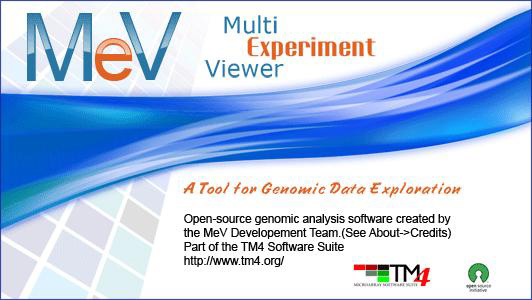

MEV: MultiExperiment Viewer
Version 4.6
July 2, 2010
Table of Contents
General Information
TM4 Software Overview
Starting MultiExperiment Viewer
Using Java Webstart
Loading Expression Data
Loading MeV (.mev) Format File
Loading TIGR Array Viewer(.tav)Files
Loading Tab Delimited, Multiple Sample(.txt) Files(TDMS Format)
Loading Affymetrix Data (.txt, .TXT) Files
Automatically Setting Color Scale Limits
Loading GenePix (.gpr) Data Files
Loading Agilent Files
Loading GEO Simple Omnibus Format in Text (SOFT) Affymatrix format File
Loading GEO Simple Omnibus Format in Text (SOFT) two channel format File
Loading GEO Series Matrix Files
Loading GEO GDS Format Files
Loading Bioconductor(MAS5) Format Files
Loading Affymatrix GCOS Format Files
Loading MAGE-TAB formatted data files
Loading dChip Output Files
Using the Annotation Feature
Initial View of the Loaded Data, Main Expression Image
Result Navigation Tree
The History Node and Log
Adjusting the Data
Adjustment/Filter Overview
Data Transformations
Data Source Selection
Display Options
Sample Annotations
Selecting Gene Annotation
Color Scheme Selection
Setting Color Scale Limits
Element Apperance
Viewer Descriptions
Overview
Expression Images
Centroid Graphs
Table Views
Common Viewer Activities
Working with Clusters
Storing Clusters and Using the Cluster Manager
Utilities Menu
Search Utility
Import Gene or Sample List
Append Sample Annotation
Append Gene Annotation
Creating Output
Saving the Analysis
Saving the Expression Matrix
Saving Viewer Images
Saving Cluster Data
The Gaggle Implementation
Introduction to the Gaggle
The Gaggle Menu
Using the Gaggle with MeV
Modules
Description Conventions and General Pointers
CLustering
HCL: Hierarchical Clustering
HCL Parameters
Adjusting the Tree Configuration and Viewing Clusters
TEASE: Tree-Ease
Mode selection
TEASE Parameters
Navigating the Hierarchical Tree
Adjusting Tree Configuration and Viewing Clusters
ST: Support Trees
Parameters
SOTA: Self Organizing Tree Algorithm
Parameters and Basic Terminology
KMC: K-Means/K-Medians Clustering
Parameters
KMS: K-Means/K-Medians Support
Parameters
CAST: Clustering Affinity Search Technique
Parameters
FOM: FOM-Figures of Merit
QTC: QT Cluster
Parameters
SOM: Self Organizing Maps
Basic Terminology
Parameters
NMF: Non-negative Matrix Factorization
Parameters
Statistics
PTM: Template Matching
Parameters
TTEST: T-tests
Parameters
SAM: Significance Analysis of Microarrays
Parameters
ANOVA: Analysis of Variance
Parameters
TFA: Two-factor ANOVA
NonpaR: Nonparametric Statistical Tests
Brief Test Descriptions
Running NonpaR Tests
Mack-Skillings (MS) Test Dialogs
Fisher Exact Test
BETR: Bayesian Estimation of Temporal Regulation
Parameters
LIMMA: Linear Models for Microarray Data
Parameters
Survival Analysis
Running the Module
GLOBANC: Global Analysis of Covariance
RP: Rank Products
Running the Module
Parameters
MINET:Mutual Information Network
Parameters
Classification
SVM: Support Vector Machines
SVM Dialog Overview
Process Initialization Parameter Information
SVM Output
USC: Uncorrelated Shrunken Centroids
Advanced Parameters
KNNC: K-Nearest-Neighbor Classification
KNN Classification Parameter Information
DAM: Discriminant Analysis Module
Parameters
Data Reduction
RN: Relevance Networks
Parameters
PCA: Principal Components Analysis
COA: Correspondence Analysis
TRN:Expression Terrain Maps
Terrain Navigation
The Terrain Viewer Menu
Cluster Selection and Related Operations
Meta Analysis
GSEA:Gene Set Enrichment Analysis
ATTR:Attract Package
EASE: Expression Analysis Systematic Explorer
Parameters
Advanced Parameters Dialog
Statistical Parameters Dialog
Visualization
LEM: Linear Expression Maps
GDM: Gene Distance Matrix
Matrix Viewer Basics
BN: Bayesian Networks Analysis
LM:Literature Mining Analysis
Scripting
The Script
Comparative Genomic Hybridization Viewer
Loading Experiments
CGH Analyzer Viewers
The CGH Position Graph
The CGH Browser
CGH Analysis
Higher Level Analysis
Appendix
Appendix: File Format Descriptions
TAV Files
Tab Delimited, Multiple Sample Files (TDMS files)
GenePix Files
MEV Files
Annotation Files (.ann)
Bioconductor (MAS5) Files
Affymetrix GCOS (Pivot Data) File
GEO SOFT Affymetrix File Format
GEO SOFT two channel file format
dChip or DFCI core file format
Assignment File Saving System
Special Cases
Appendix: Preferences Files
Appendix: Distance Metrics
Appendix: MeV Script DTD
DTD UML Schema
Appendix: MeV R Integration
Appendix: Bayesian Network & Literature Mining
Appendix: MeV Dependencies
License
Contributors
{kind=link}